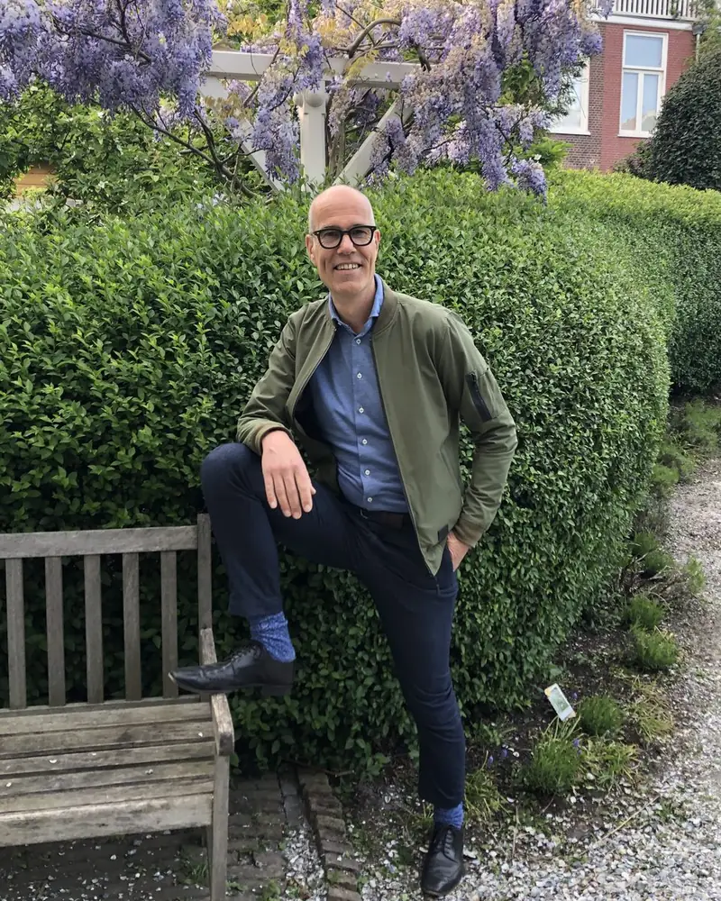

Adviseur | Coach | Interim manager | Spreker
Voor mensen die met plezier en energie willen werken. Voor organisaties die zich willen onderscheiden.
Ik help organisaties om gedrags- en cultuurverandering te bereiken zodat gezondheid en vitaliteit een vaste plek krijgen in het werk. Door een integrale aanpak met een datagedreven en wetenschappelijke basis op leefstijl, cultuur en leiderschap. Vanuit mijn eigen ervaring en met een zakelijke blik.
Of neem direct contact op: 06 5168 6865 walter.montenarie@gmail.com

Relevante ervaring
Als leidinggevende en directeur heb ik kleine en grote teams aangestuurd, onder andere bij Springer Nature, Sdu en Noordhoff.
Als adviseur, leiderschaps- en gezondheidscoach heb ik onder andere gewerkt in opdracht van KLM, de Tweede Kamer, Dura Vermeer, de Gemeente Rotterdam, Rijkswaterstaat, het Ministerie van Economische Zaken en Klimaat, de Radboud Universiteit en Sweco.
Alle vaardigheden onder één dak
Met de kennis van een adviseur, de vaardigheden van een coach en de zakelijke blik van een directeur zorg ik voor een duurzaam resultaat.
Analyse
Data-analyse met diepte-interviews met leidinggevenden, arbomedewerkers, HR en medewerkers.
Inzicht
Het resultaat gepresenteerd in een compacte rapportage.
Bewustwording
Presentatie leidt tot bewustwording bij directie, leidinggevenden en medewerkers.
Kennis
Het delen van wetenschappelijk onderbouwde kennis versterkt bewustwording en legt de basis voor gedragsverandering.
Vaardigheden
Het omzetten van bewustwording en kennis in praktische vaardigheden.
Gedragsverandering
De som van de voorgaande stappen leidt tot een duurzaam resultaat.
De taal van directies
Met mijn twintig jaar leidinggevende ervaring begrijp ik de uitdagingen van directies. Ik vertaal vitaliteit naar meetbaar resultaat: lager verzuim, hogere productiviteit, betere gezondheid en duurzame inzetbaarheid.
Coach en ervaringsdeskundige
Als opgeleid gezondheidscoach en ervaringsdeskundige op het gebied van burn-out weet ik wat gedragsverandering vraagt. Ik help mensen bij verschillende uitdagingen bij mentale en fysieke gezondheid. Van stress, burn-out en werk-privébalans tot slaap, overgewicht, diabetes type 2, hoge bloeddruk en cholesterol.
Kennis van de markt
Ik ken de uitdagingen van verschillende sectoren, zoals het onderwijs, de zorg, productiebedrijven, de overheid en commerciële dienstverleners. Ik heb een groot netwerk bij aanbieders en diensten in de markt, waardoor ik kan adviseren over de juiste bewezen effectieve interventies.
Ik werkte onder meer in opdracht van
Van luchtvaart en bouw tot overheid en onderwijs.
- KLMLuchtvaart
- Tweede KamerRijksoverheid
- Dura VermeerBouw en infra
- Gemeente RotterdamGemeente
- RijkswaterstaatRijksoverheid
- Ministerie van Economische Zaken en KlimaatRijksoverheid
- Radboud UniversiteitOnderwijs en onderzoek
- SwecoIngenieursbureau
Wat anderen zeggen
Walter is een heel toegankelijke en open persoon, met wie het prettig samenwerken en sparren is. Hij combineert veel kennis en ervaring op het gebied van vitaliteit en duurzame inzetbaarheid met een sterke commerciële blik en het vermogen om kansen te zien en mensen met elkaar te verbinden.
Wat ik bijzonder aan Walter waardeer, is dat hij niet alleen ideeën heeft, maar ook graag dingen in beweging zet. Hij denkt mee, neemt initiatief en zoekt actief naar mogelijkheden om tot concrete samenwerking te komen.
Waarom nu
Organisaties kampen met personeelstekorten, stijgend verzuim en een ouder wordende beroepsbevolking. Een losse workshop of fruitmand helpt dan niet. Wat wel helpt is een aanpak die past bij je organisatie en waarvan je het effect kunt meten.
Wat ik doe
- Strategisch advies
- Team- en leiderschapscoaching
- Gezondheidscoaching
- Workshops
- Business development
- Interim-management
Recente artikelen
Burn-out voorkomen in je team
Signalen herkennen en het gesprek voeren zonder oplossingen aan te dragen.
Moet je je druk maken over werkdruk?
Werkdruk kent veel oorzaken. Wat je er als organisatie en als team aan kunt doen.
Week zonder Werkstress
Zeven ideeën die verder gaan dan een workshop, van 9 tot en met 13 november 2026.
Kennismaken?
Vertel me waar je organisatie tegenaan loopt. In een eerste gesprek kijken we samen wat zinvol is.
Plan een gratis gesprek van 30 minuten